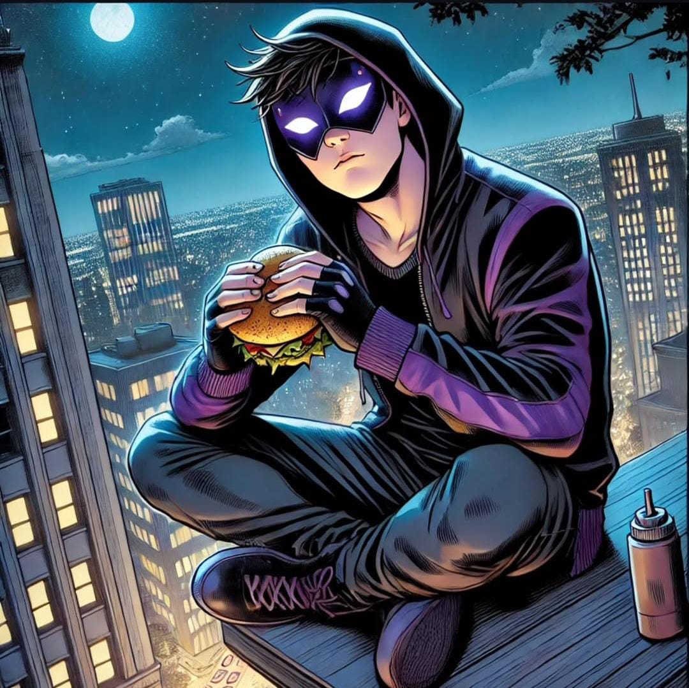
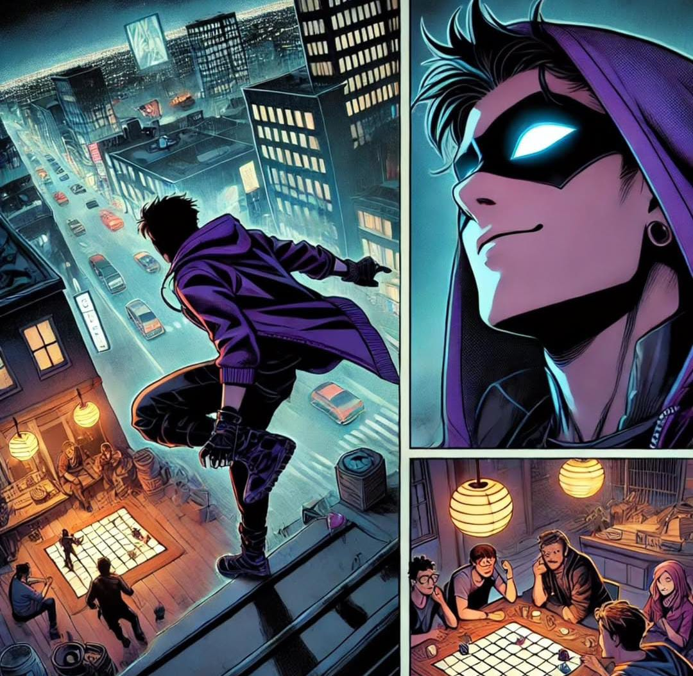
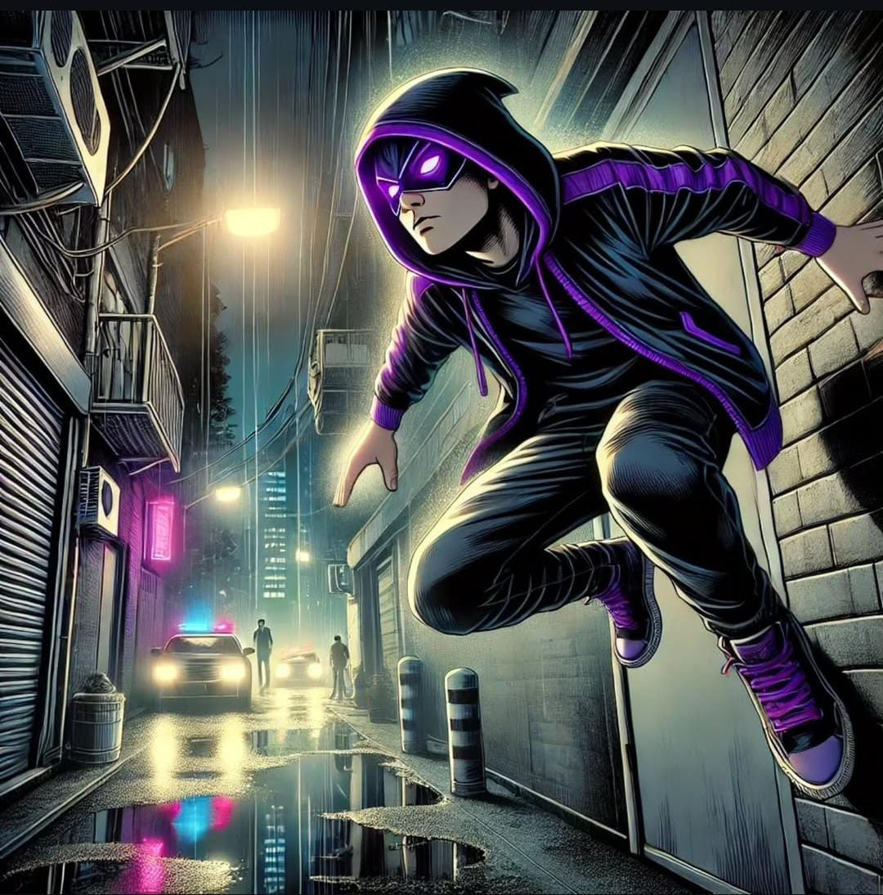
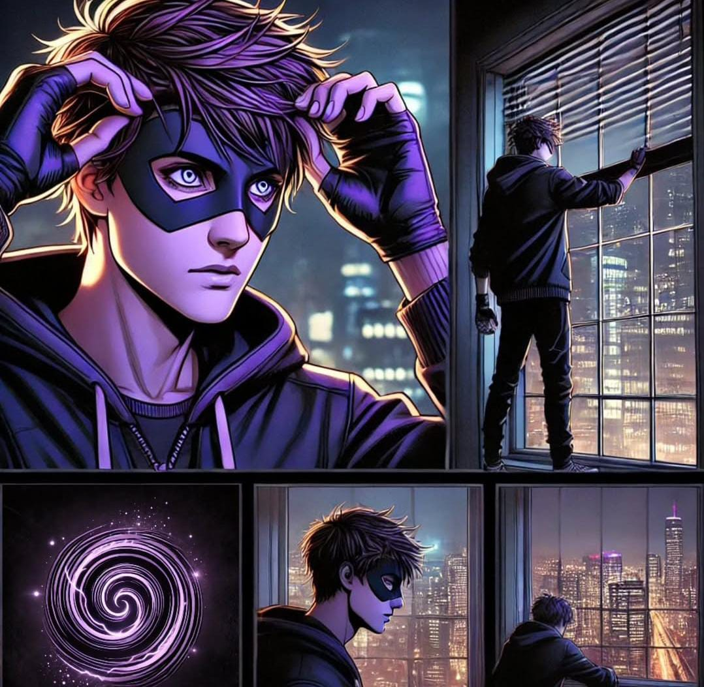
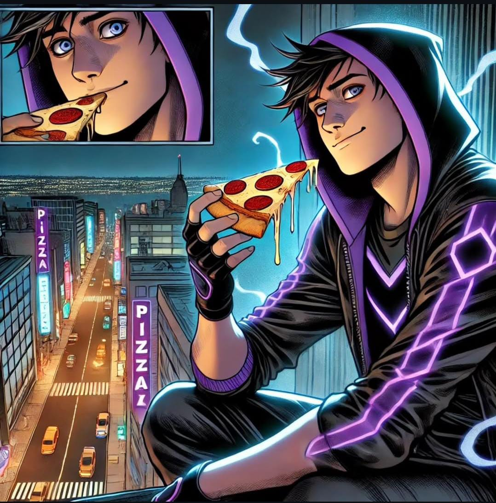
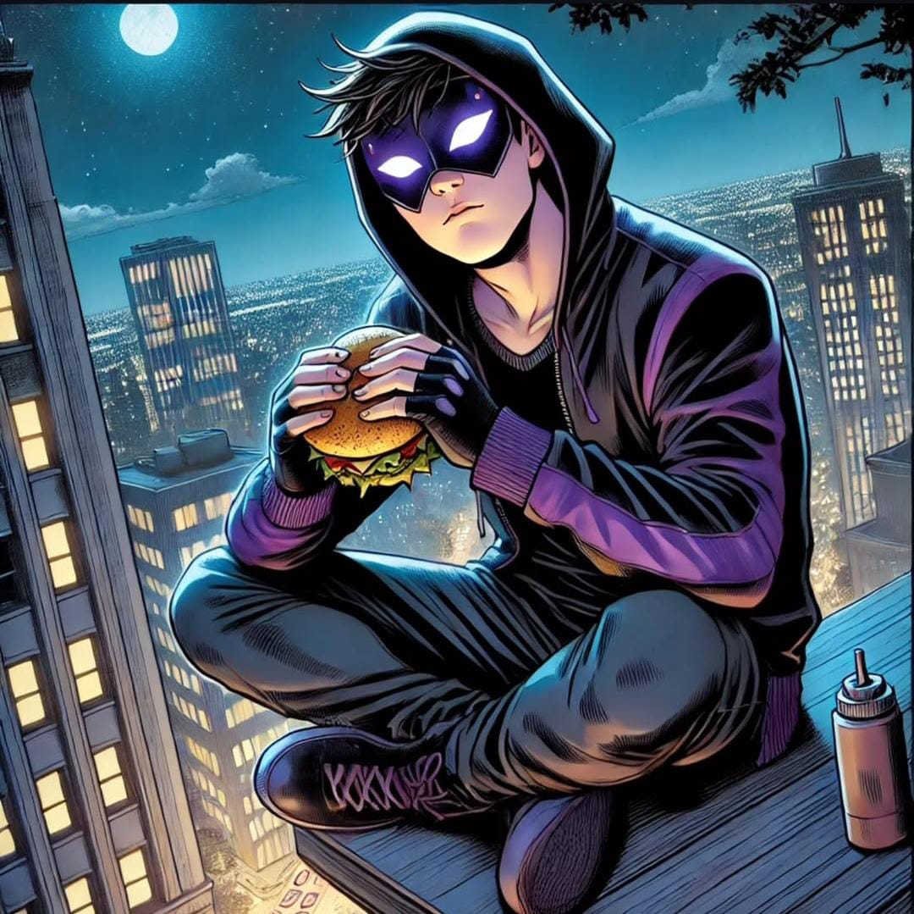
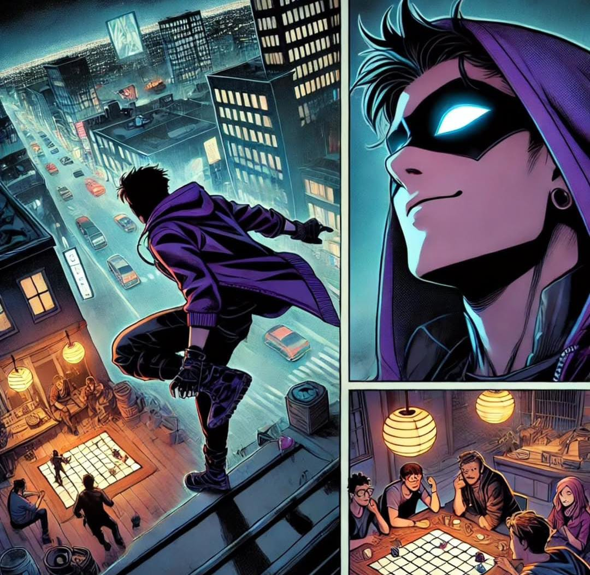
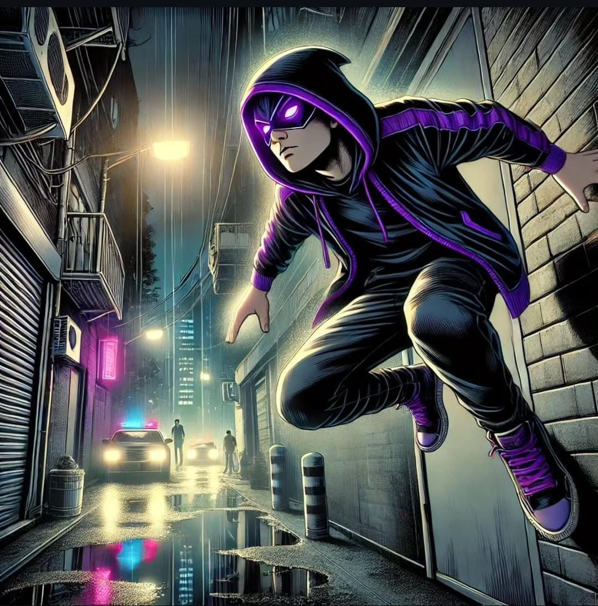
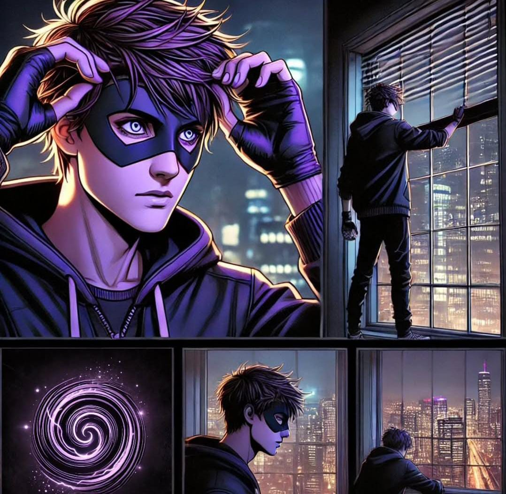
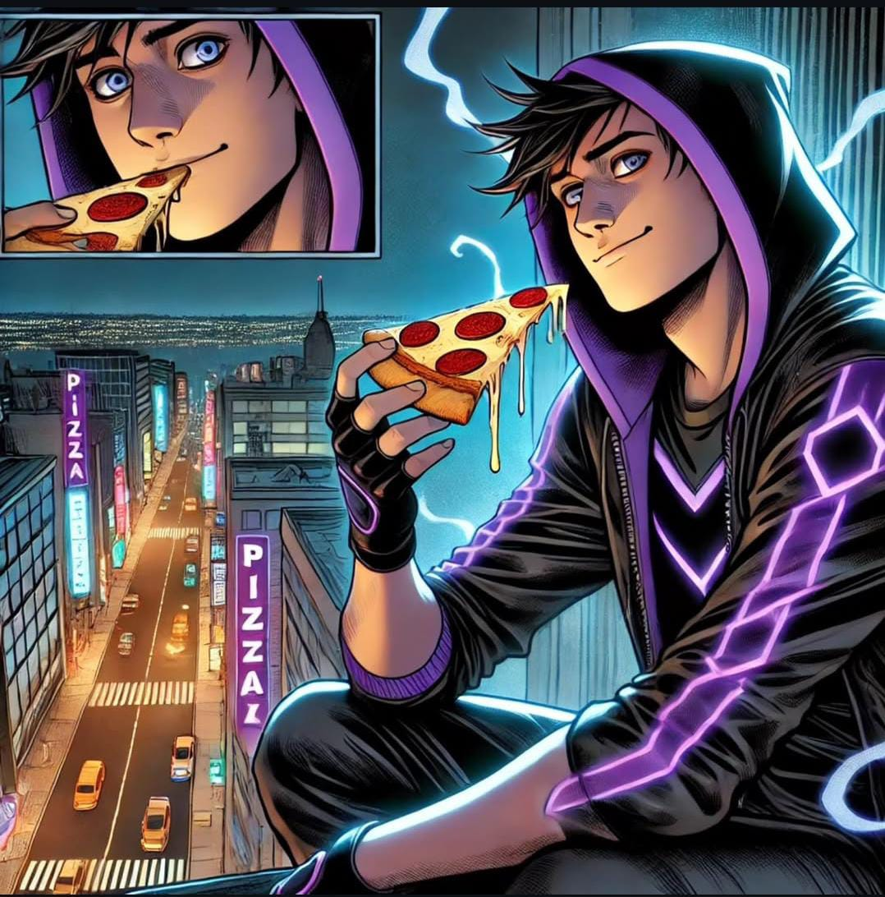

Luke Silver, um jovem de 19 anos, vive com sua mãe na cidade de Embu-City e leva uma vida aparentemente comum. Apaixonado por tudo que envolve cultura geek, ele é carismático e tranquilo. No entanto, por trás dessa fachada comum, ele esconde uma identidade secreta: Nox, a Sombra da Noite. Como vigilante noturno, ele protege os cidadãos e enfrenta todo tipo de ameaça, utilizando seus poderes telepáticos e telecinéticos para manter a cidade segura.
A primeira manifestação de seus dons ocorreu quando Luke tinha 16 anos. Em seu quarto, ele se fantasiava de seus heróis favoritos, imitando poses e falas icônicas. Entre um momento e outro, subiu em sua cadeira, empolgado, encarnando um de seus ídolos. No auge da emoção, perdeu o equilíbrio e caiu para trás. No entanto, antes que seu corpo tocasse o chão, um instinto desconhecido se ativou: o tempo pareceu desacelerar, e, num reflexo involuntário, ele parou no ar por um breve instante antes de pousar suavemente. Confuso e maravilhado, percebeu que havia algo diferente em si. Naquela mesma noite, compartilhou sua descoberta com seu pai. Ao contrário do que temia, seu pai não demonstrou medo ou rejeição—pelo contrário, ouviu atentamente e lhe deu apoio. Porém, ambos sabiam que pessoas com habilidades como as dele não eram bem vistas na sociedade, então decidiram manter isso em segredo.
Com o passar dos meses, Luke sentiu que precisava testar suas habilidades no mundo real. Inspirado pelos heróis que tanto admirava, decidiu sair escondido para patrulhar a cidade, ajudando como podia. Contudo, seu pai descobriu sua ausência e, preocupado, saiu de carro para procurá-lo. O destino foi cruel: no caminho, sofreu um acidente fatal. Ele morreu sem receber ajuda de ninguém. A dor e a culpa consumiram Luke. Se ele não tivesse saído naquela noite, seu pai ainda estaria vivo. Neste momento ele se lembrou das palavras de seu pai: "Se você tem força, use-a para proteger os outros, não para se engrandecer. O verdadeiro poder está em ajudar quem não pode se defender sozinho." e foi ali que ele tomou uma decisão: se ninguém ajudou seu pai quando ele mais precisou, então ele se tornaria aquele que sempre ajudaria os outros. Assim nasceu Nox, a Sombra da Noite.
Apesar de sua personalidade leve e brincalhona como Luke, Nox representa seu lado mais sombrio. Como vigilante, ele se torna uma figura de terror para os criminosos, utilizando sua presença para instilar medo. Seu poder telepático permite que ele mergulhe na mente de seus inimigos, fazendo-os encarar seus piores pesadelos. Ele transita entre a luz e a escuridão, sendo ao mesmo tempo um protetor e uma sombra que assombra aqueles que ameaçam os inocentes.
Nox não luta apenas contra o crime—ele luta contra si mesmo. Carrega o peso da perda e da culpa, mas também o desejo genuíno de proteger os outros. Ele se apoia nas lições de seu pai e em seu amor pela cultura geek, abraçando os clichês e soltando frases de efeito como um verdadeiro herói de quadrinhos. Seus poderes são uma dádiva e um fardo, e sua jornada como vigilante é repleta de desafios. Mas uma coisa é certa: enquanto a noite cair sobre Embu-City, Nox estará lá, vigiando nas sombras.
 








